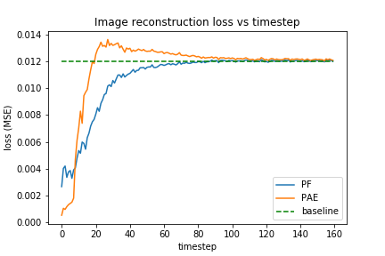
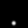

Configuration: {'mass': 1.0, 'dynamics_noise': 0.01, 'wall_action': 'pass', 'measurement_noise': 0.5, 'mass_mode': 'uniform', 'radius': 2.0, 'ball_action': 'bounce', 'n_bodies': 1, 'radius_mode': 'uniform'}

| Ground truth |
Particle Filter |
PF Sample |
Predictive AE |
PAE Sample |
|
 |
|
|
|